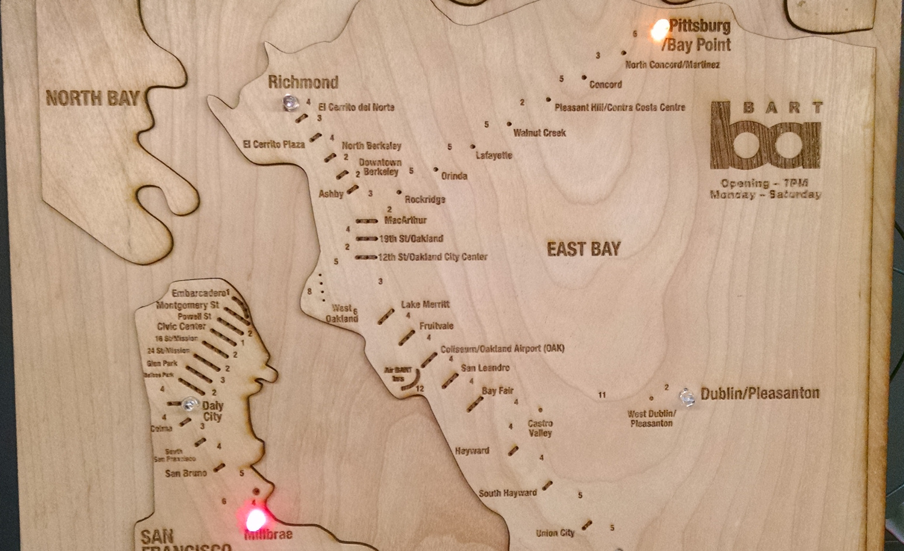

David Crowley
Designer, coder, researcher & human enthusiast
Selected work
HP Sprout
A new form of computing
Intranet
Helping people get things done
Move companion
Making journeys better
More work
Ixonos
- Designed and developed a new form of computing, smart office, streaming television app and location-aware retail shopping app.
- Designed and prototyped VR and AR apps that utilized gestures and motion controls.
- Created and conducted user tests, including voice feedback and driving simulations.
- Helped conceive and run the IXD Conference as part of a team.
Seabourne
- Designed and developed sites and apps for desktops, mobiles and tablets.
- Automated tests using Python and Selenium.
- Recorded tutorials for developers.
- Developed jQuery plugins.
U-Haul
- Designed and developed sites, intranets, mobile apps, point of sale terminals and kiosks.
- Built and fostered a design team that is dedicated to users and backed up by researching customers and employees using location visits, user shadowing, customer calls, usability tests, user interviews and session logs.
Personal projects
The Ultimate Machine (Arduino)
Heavily inspired by information theorist Claude Shannon, who built the original Ultimate/Useless machine, it's a machine that turns itself off.
BART Map (Raspberry Pi)
- A woodcut map of BART hooked up to a Raspberry Pi that lights up stations when a train is about to leave.
- 